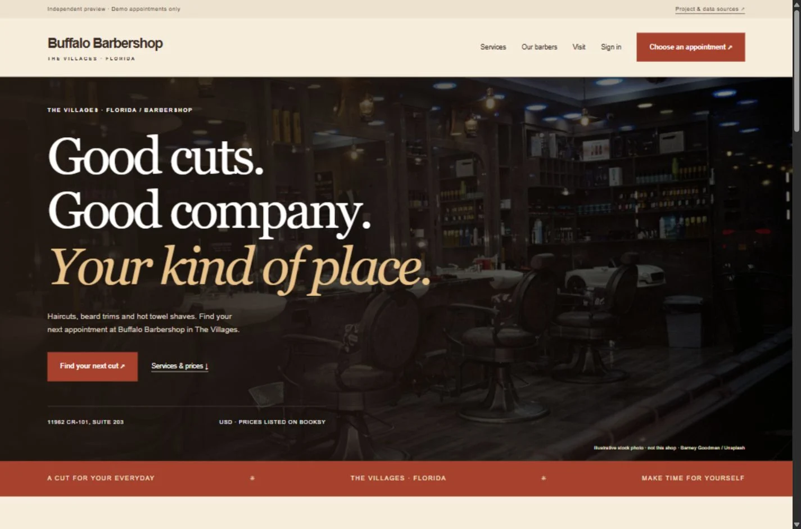
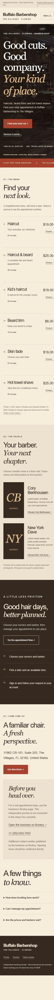

Buffalo Barbershop
Neighborhood character. Modern convenience.

Built around
the next step.
A warm, confident website with clear pricing, a direct booking journey and practical tools for the people behind the chair.
The goal was to give a visitor a clear path from discovering the business to choosing a service and getting in touch or requesting an appointment.
Independent, unofficial development project. No client relationship or measured commercial results are claimed. Public business details and pricing are documented in the project research; they should be reconfirmed with the owner before launch.
- ✓Responsive service and pricing pages
- ✓Customer accounts and booking
- ✓Role-protected administration
- ✓Barber and availability management
- ✓Licensed gallery image uploads
- ✓Persistent appointments and audit history
A website that
works behind the scenes.
The booking flow includes customer accounts, duration-aware availability and appointment status management. Server-side access controls protect the admin dashboard; SQLite keeps records between restarts.
The included demo uses example availability. It does not send appointments to the real business. Payments, email/SMS delivery and Booksy synchronization are not connected.
Explore the hosted demonstration in your browser, or download the complete project to run it locally. The demo does not send appointments to the real business. It may take a little time to wake up after inactivity.
Visit live demo ↗ (opens in a new tab)Download complete project ↓